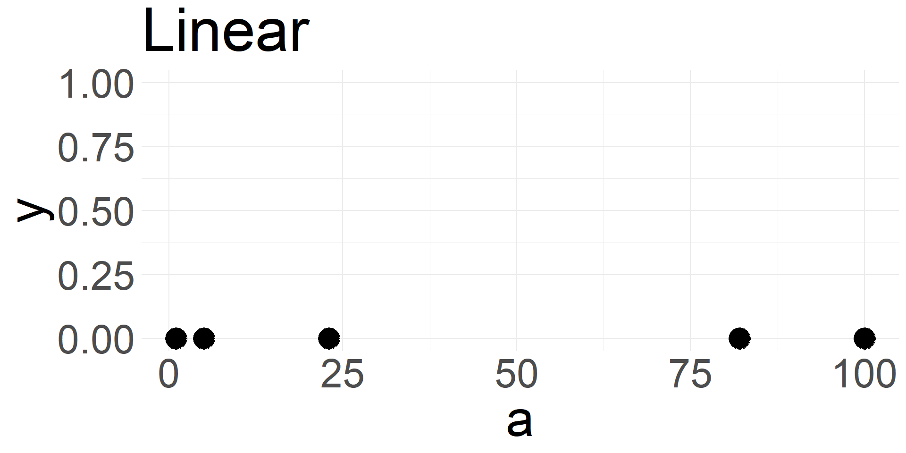
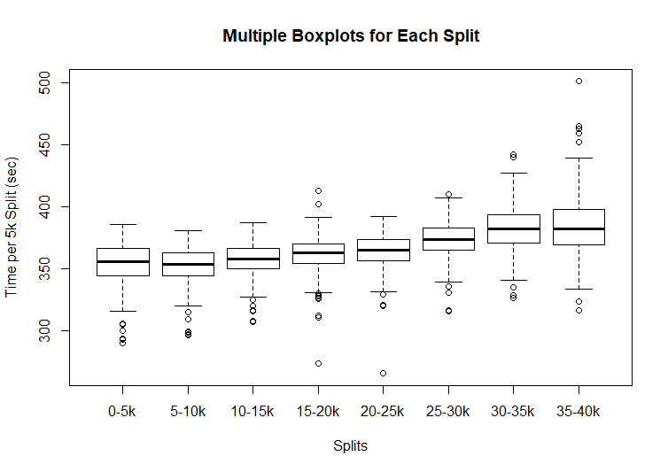
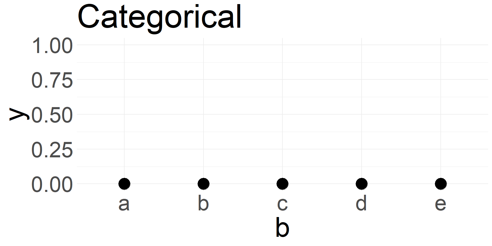
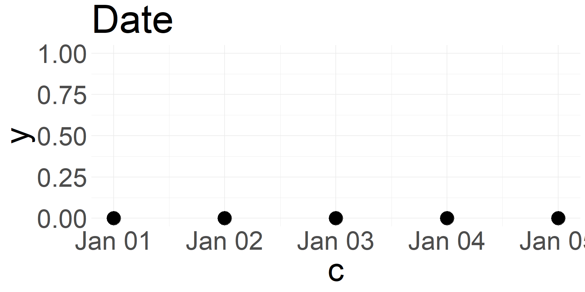

Intro to Data Visualization
SDS 192: Introduction to Data Science
Today

 


Example
Question: Which variables are mapped onto what visual cues?

Examples



Context in This Class (cont.)

Lie Factor
- Lie Factor = (size of effect in graphic)/(size of effect in data)
- Lie factor is greater when variations on a graph fail to match variations in data

Tufte, Visual Display of Quantitative Information
Inconsistent Scales

Example from callingbullshit.org
Presenting Data Out of Context

Example from mediamatters.org
Deviating from Norms

Example from callingbullshit.org
Types of Graphs
- The 5NGs